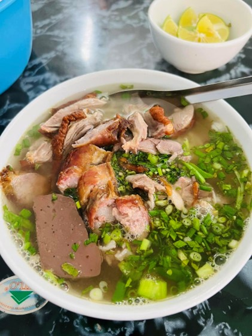
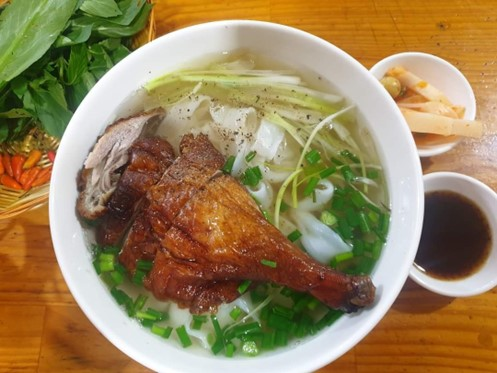

Phở vịt
Phở vịt quay Cao Bằng là một món ăn cầu kỳ. Trước tiên là khâu tẩm ướp: vịt mổ moi, nhồi lá mác mật và gừng tỏi băm nhỏ, cho thêm vài thìa nước mắm rồi dùng lạt tươi khâu kín vết mổ lại. Khi quay gia vị sẽ ngấm vào làm thịt vịt đậm đà hơn và nước thịt ngọt tiết ra, hòa với các loại gia vị thành một thứ nước nâu sẫm, thơm ngậy. Nước này dùng để chấm thịt vịt, một thứ nước chấm ngon ngọt, tuyệt hảo, với mùi thơm quyến rũ rất đặc trưng của lá mác mật.
Vịt quay phải qua nhiều công đoạn: trần qua nước sôi, hơ trên than hồng, phết mật ong, quay trên chảo mỡ… Sơ bộ là thế còn cụ thể hơn như thế nào thì không phải đầu bếp nào cũng tiết lộ. Chỉ biết vịt quay xong có màu đỏ như cua luộc nhưng có phần sẫm hơn. Thịt mềm ngọt, săn chắc, mỡ mà không béo. Miếng thịt xắt vuông quân cờ, chấm đẫm nước chấm lấy từ bụng vịt, ăn cùng với phở, tưởng cao lương mỹ vị của vua chúa xưa kia cũng chỉ ngon đến thế là cùng.
Phở Cao Bằng sợi dẻo, mềm mà không nhũn, dai mà không cứng, ăn có vị thơm bùi của bột gạo. Gạo để làm bánh phở chỉ là loại gạo thông thường nhưng phải là loại gạo cũ. Gạo ngâm cho mọng nước, khi xay cho thêm ít cơm nguội để bánh phở thêm dai, cho bao nhiêu thì chỉ các nhà hàng mới biết. Bánh tráng xong phơi trên sào nứa, để chỗ thoáng gió cho se mặt, sờ không dính tay là được. Cứ vài lá bánh gấp lại làm một, đem thái. Sợi nào sợi nấy đều tăm tắp.
Nhưng quan trọng hơn cả là nồi nước dùng. Phở ngon hay không đều do nồi nước dùng quyết định. Nước dùng chỉ dùng xương heo chứ không dùng xương bò hay bất cứ loại xương nào khác. Xương heo có thể là xương thủ, xương đuôi… đều được, nhưng phải có vài đôi xương ống. Như vậy nồi nước dùng mới ngọt, vị ngọt chân chất của xương chứ không phải vị ngọt nhân tạo của mì chính. Xương ninh kỹ và vớt bọt cũng thật kỹ để nồi nước dùng thật trong, không cặn, nếu không bát phở ăn mất ngon.